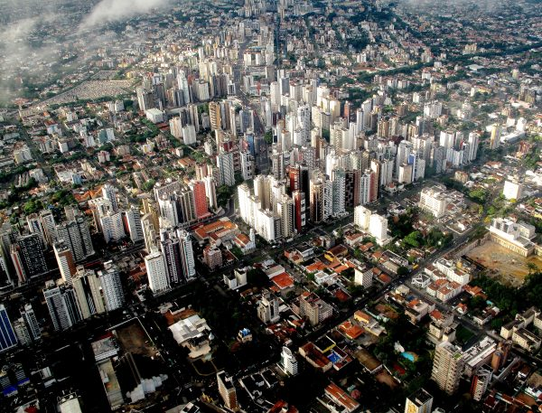

Urban Mobility Policies
Potential emissions reductions from urban mobility.
By 2050, 86% of people in developed countries and 64% of people in developing countries are expected to live in urban areas – potentially increasing transportation demand and traffic congestion, along with greenhouse gas and conventional pollutant emissions. However, smart urban mobility policies can reduce transportation emissions, improve the quality of life in urban areas, and contribute at least 2% of the cumulative global emissions required to meet the two-degree Celsius target.
Several types of policy can contribute to this goal, including robust support for public transit coupled with mixed-use development, measures designed to facilitate biking and walking, and designing an interconnected street layout with small blocks. Different policies will be more effective in cities of different sizes (i.e. rapidly growing cities compared to those that are already largely developed) so urban planners and policymakers should work together enact the policies that best suit each city’s physical, economic, and political circumstances
Infrastructure investments have long lead times and can last for decades, meaning poor decisions today can increase congestion, energy use, and pollution for generations. Creating the city of the future is critical, so the trend toward increased urbanization make smart urban design and mobility measures a crucial component of the transition to a clean energy future.
This section discusses key policies in a global context. For country-specific policies, see 12 Green Guidelines, a paper authored by Energy Innovation and China Development Bank Capital, or the much more detailed handbook Emerald Cities.
Policy Description and Goal
Well-designed cities are people oriented and provide robust transportation options, whereas poorly designed cities can create gridlock and poor air quality. The key policies for excellent urban mobility are well-designed, well-funded public transit; mixed-use and transit-oriented development; measures to facilitate biking and walking; compact and infill development; and vehicle control. The value and design of these policies are likely to vary with a city’s size.
Well-Designed, Well-Funded Public Transit
For cities of all sizes, public transit is the backbone of the transportation system, particularly during busy commute hours when roadways are at or over capacity. For public transit to succeed, it must be a first-class option—a travel mode people prefer because it provides a better experience and a higher level of service than driving alone in a private vehicle.
Bogota’s bus rapid transit system features dedicated bus lanes and pre-boarding fare collection. Source: Wikimedia Commons.
Metro (subway) systems can provide a high level of service, but they are very expensive to construct, which can be prohibitive for many cities. Bus rapid transit systems (BRT) can provide similar benefits and performance to metro lines and cost dramatically
More broadly, transit systems should be coordinated so passengers can easily switch lines and modes. Multimodal systems are becoming even more important as bike-share, car-share, autonomous vehicles, BRT, light rail, metro, and other modes are all becoming part of the transportation mix. Integrated fare systems, shared structures (e.g., a single terminal for different modes), and parking management are important elements of a well-integrated transit system.
Transit centers should also contain bike-sharing stations and bicycle parking and be designed for walkability to facilitate switching to non-motorized modes of transport experience. Real-time data on vehicle locations can reduce the time passengers wait for a transit vehicle and can assist in optimizing dispatch. A universal smart card can streamline passengers’ payment across all regional transit systems and vehicle types.
Increasingly, ride-share applications such as Uber and Lyft are becoming a central part of transit in cities. Although it is important for cities to plan and optimize around these growing forms of transportation, they are not and should not be thought of as replacements for traditional transit systems. Relying heavily on these services in lieu of other transit options, such as buses or light rail, can lead to large negative impacts. For example, in New York City, ride-sharing apps have made traffic much worse.
Mixed-Use and Transit-Oriented Development
The goal of urban mobility is not to allow people to cover the maximum number of miles, whether by bike or car, but to create access to what people need every day. Smart urban planning can reduce the number of trips people make and, when people do travel by vehicle, can shift some of those trips onto transit vehicles.
Mixed-use zoning locates residential, commercial, and other uses (e.g., community services, healthcare, education) in the same area. Residents of a mixed-use neighborhood are able to reach many different types of amenities without a vehicle. This reduces the number of trips needed for tasks such as grocery shopping, dining at a restaurant, visiting a bank, and so forth. Some employees of the businesses in mixed-use areas will choose to live in the area, eliminating commute trips as well. Mixed-use zoning also creates a vibrant, walkable streetscape and can be particularly beneficial to elderly and disabled people who may have trouble traveling long distances.
Transit-oriented development involves zoning for high densities near metro stations and along transit corridors. Many people are not willing or able to walk far in order to get to trains; the walking distance to the nearest high-capacity transit center should be no more than one kilometer (a little over a half-mile).
By ensuring most residences and places of employment are located near convenient transit options, a city can minimize the number of trips people choose to take using private vehicles. Density should be matched to transit capacity, with the highest densities near large stations that can accommodate the resulting flux of travelers. Areas around stations should be walkable and include mixed uses, because high foot traffic around transit stations can benefit the nearby retail outlets.
Development should be inclusive. Specifically, this means ensuring connections to affordable housing, which is often placed farther out of the city center with less access to transit for the people in greatest need of service.
Biking and Walking
The most vibrant and livable cities around the world are those that boast an attractive environment for walking and biking. These non-motorized modes of travel emit no pollution and offer public health benefits by increasing people’s physical activity. Their space efficiency also reduces the amount of land needed for parking lots and structures, parking alongside roadways, and travel lanes. This allows more of that space to instead be devoted to people (parks, shops, offices, and so on).
Chicago’s 606 multi-use trail was previously an abandoned rail line. Source: Wikimedia Commons.
Cities should include dedicated biking and walking paths that are protected from motor vehicle traffic. Certain streets, particularly those lined with shops and restaurants, can be changed to pedestrian boulevards that limit or prohibit the use of cars. Sidewalks should be wide and feature amenities such as trees, benches, and high-quality lighting to increase the appeal of walking. In some cases, city transportation infrastructure or right-of-way that is no longer in use can be converted for biking or walking, such as Chicago’s 606 elevated trail or New York City’s High Line.
Street layout also has a strong effect on walkability. Interconnected street networks with small block size and smaller streets maximize a neighborhood’s walkability and bikability. Layouts with wide streets and large block sizes (as in many Chinese cities), as well as poorly interconnected street layouts with winding roads and cul-de-sacs (as in many U.S. suburbs), increase the average distance to reach a destination. They also tend to funnel more cars onto fewer streets, which increases traffic congestion despite the greater width of these arterial streets.
The effect of street layout on average travel distance.
Compact and Infill Development
Cornelius, Oregon’s urban growth boundary has encouraged infill development and protected surrounding open space. Source: Google Earth.
A city sprawls outward when developers build on the city’s periphery, often converting greenfields (e.g., farm fields, pasture, and wilderness) into roads, houses, and buildings. Because the cost of land on city outskirts is low, developers tend to use larger lot sizes, building widely dispersed houses with large yards. These areas can lead to car dependence, because many homes are too far away to easily walk or bike to common destinations.
Developers should instead be encouraged to build on unused or low-value land already within the developed footprint of the city, such as building on empty lots or surface parking lots, replacing abandoned or low-value structures with taller and better ones, and renovating historic buildings that have fallen into disuse.
One of the strongest tools to achieve compact and infill development is an urban growth boundary: a line encircling a city beyond which development is not permitted (except for certain uses, such as farms and parkland, which are not part of the city’s footprint), like the Green Belt in London, UK. The urban growth boundary can be expanded periodically by an act of the city or regional government if opportunities for infill development grow scarce.
Other tools to promote infill development include reducing impact fees (fees levied by cities on developers of new projects to fund expansion of city services, such as extra police, school, and firefighting capacity) and expediting the application process and other paperwork for infill projects.
Vehicle Control
Vehicles cause large social impacts, including harms to public health, traffic accidents, and lost time and productivity due to traffic congestion. Vehicle control policies seek to reduce the number of vehicles on the road by either discouraging car owners from driving in dense urban areas (by making it more inconvenient or expensive to do so) or optimizing vehicle routes to reduce congestion.
The simplest and cheapest form of vehicle control is parking management. Cities may reduce the quantity of parking or charge higher parking fees. This allows more land to be devoted to other uses and imposes a financial penalty for using a car to reach a busy part of the city. With new technology, parking fees can vary based on usage, so it becomes more expensive to park as fewer parking spaces remain available. This helps ensure parking capacity is rarely, if ever, exhausted. Parking management is easier and cheaper to implement with various sensors and information technology systems than many other forms of car control, and it can create revenue for other transport investments.
Congestion pricing imposes a fee on drivers entering the city center or other crowded areas, particularly at peak hours. Crowded roadways may also be managed with congestion pricing—effectively converting them into toll roads whose fees vary with congestion level.
Another form of vehicle control involves limiting the number of vehicle registrations. Permits can be distributed by lottery, which is fairer for all socioeconomic classes, or by auction, which generates revenue the city can spend to improve urban mobility for lower-income groups and other residents who do not use cars.
Cities may also impose zoning restrictions capping the number of parking spaces in new developments at one (or fewer) per household so these developments will attract residents who prefer to live with just one car (or none at all).
When to Apply These Policies
Every urban area should be integrating forward-thinking urban mobility goals into its development plans. Designing policy correctly from the outset can prevent urban sprawl and lead to a pattern of infrastructure development and urban form that will promote compact growth, maximize walkability, and increase quality of life for residents.
The right policies to promote smart urban development depend on the physical characteristics, size, and growth patterns of the city or region where the policies are to be enacted. The policies recommended in this section use population figures that are intended as rough guidelines.
In practice, different population levels, density, transit demand, and income level may make some policies more cost-effective than others. The following policies also apply best to towns or cities that are growing or developing in population or economic size, rather than static or shrinking towns and cities.
Towns and Cities of All Sizes
All towns and cities should develop and maintain comprehensive land use and transportation plans. Plans help ensure that development occurs in a thought-out way, and they can concentrate development along existing or future transit corridors. The process of developing a plan should involve public input, and it can increase the local government’s confidence that its direction and vision are supported by most residents. The plan can then serve as a guide for zoning decisions, for public infrastructure construction, and for private residential and commercial development.
Towns and Small Cities (40,000 – 200,000 People)
A town should establish an urban growth boundary early in its development. Open lands around the town may still be plentiful, allowing a boundary to be drawn with less political contention and less chance of cutting off “islands” of preexisting development beyond the new boundary. Encoding infill and high-density development into the town’s DNA from the beginning will help set residents’ expectations about the character of the town and facilitate the establishment of a vibrant and walkable downtown district.
At this size, a town is too small to support the investment necessary for urban light rail infrastructure, unless it is situated near a larger city and can be served by an extension of that city’s rail system. Towns at the smaller end of the scale may be too small to justify a BRT system, because it may be possible to quickly traverse the whole town with regular bus service. A town should start with regular urban bus service. As it grows, one or two BRT lines may be established, which serve the main corridors of the town, including the central business district and the densest concentration of residential neighborhoods.
The central business district in Breckenridge, Colorado. Source: Pixabay.
The most cost-effective period in a town’s lifecycle for the government to secure rights-of-way for future infrastructure projects is when the city is still small and land values are still low. Forward-thinking acquisition of rights-of-way can allow the future development of surface rail infrastructure, which is much cheaper per mile than underground or elevated trains. This is also the best time to build biking and walking paths, which are inexpensive and can be especially useful for smaller towns, which can often be traversed effectively by bicycle.
People who live in towns of this size often need to drive elsewhere for services, so car control measures, such as limiting the number of vehicle permits or residential parking spaces, are not appropriate. Instead, local government should zone commercial areas, especially the central business district, to encourage pedestrian-friendly storefronts positioned against the sidewalk, while disallowing or at least discouraging strip malls with large surface parking lots, big-box retail, and drive-through restaurants. Parking in the central business district should be provided by city-owned parking structures, which charge a modest fee for parking, rather than by situating parking spaces in front of every shop and restaurant.
This is a crucial time in a town or city’s lifecycle to begin encouraging compact and mixed-use development. Cities should zone for several-story buildings downtown, featuring ground-floor commercial space below multifamily residences. They should include aesthetic streetscape improvements such as trees, benches, and decorative lighting and should integrate parks and green- space into the town, including its central business district.
Mid-Sized Cities (200,000 – 500,000 People)
At this size, a city should make a serious and sustained commitment to high-quality, dedicated-lane BRT service or a light rail system. Devoting lanes to BRT or making space for rail lines and stations becomes more expensive and difficult at larger sizes, especially if a sprawling development pattern has been established (e.g., in Atlanta, Georgia and Nashville, Tennessee). The benefits of public transit should be clearly communicated to residents, including economic returns, public health, and less time spent waiting in traffic.
Transit-oriented development in Plano, Texas. Source: Wikimedia Commons.
This is also an appropriate size for a city to commit to transit-oriented development projects featuring high-density, mixed-use buildings in proximity to light rail stations and other transit hubs. If an urban growth boundary is in use, it should be expanded only gradually and deliberately. Infill development can be encouraged through floor area ratio bonuses and expedited permitting. Building upward, not outward, should be established as part of the city’s character to reduce future opposition to development at the density needed to maintain a city’s walkability, livability, and affordability as it grows. Building height limits are usually a bad idea.
A city should continue to develop biking and walking paths and, at this time, also consider establishing pedestrian-only streets, which can create vibrant areas for residents to visit and shop.
Large Cities (500,000 – 2 Million People)
At this size, a city needs a robust, well-developed public transit system. Investments in light rail and BRT systems may now be augmented with traditional metro (heavy rail) services. In dense areas, this may include elevated or underground tracks. Tunnel boring technology has become cheaper in recent decades and allows deeper tunnels and stations that do not follow the street grid, minimizing disruption during construction.
The Volkstheater Metro Station in Vienna, Austria. Source: Wikimedia Commons.
Planning for continued growth should be heavily influenced by available and anticipated public transit routes, which will increasingly serve as the city’s backbone. As the number of public transit and non-motorized travel options grows, it is increasingly important for new projects to be designed and built to connect with existing forms of transportation.
Aside from parking fees, which can work in smaller towns, this is the city size at which car control measures start to become viable. Cities should start limiting the amount of parking provided with new residential developments, particularly in denser areas that are well served by transit.
Cities should continue to encourage infill, mixed-use, and transit-oriented development through appropriate zoning, expedited permitting, and floor area ratio bonuses for buildings in high-priority areas.
Mega-Cities (More Than 2 Million People)
At this size, some of the strongest car control policies become viable, including limits on the overall number of vehicles that may be registered, as well as taxing all vehicles entering the city center or central business district during peak hours. BRT and light rail systems continue to be helpful, but they are likely to become insufficient, so it will be necessary to provide a high-capacity metro system capable of moving hundreds of millions of riders per year.
Tax-increment financing may be particularly useful to fund transit expansion. Tax-increment financing is a funding mechanism in which future increases in property tax revenues in a given district are devoted to paying off debt incurred for a civic project in that district. Because projects funded with tax-increment financing can increase the property values of nearby buildings, and megacities are dense and have high property values, even a small percentage increase in property values may generate a substantial amount of revenue.
Cafe seating along the Chicago Riverwalk in Chicago, Illinois. Source: Wikimedia Commons.
Acquiring land for biking and walking paths is often very expensive in megacities, but cities can impose requirements on private developers to provide paths or greenspace as part of their developments. For example, Chicago has expanded its pedestrian riverwalk in part by requiring all buildings constructed along the relevant section of the Chicago River to extend the riverwalk across their property.
Detailed Design Recommendations
Create a Long-Term Goal and Provide Business Certainty
Cities should not leave urban form to chance: They should draft forward- looking urban plans that will result in smart development and meet the needs of residents. Putting guidelines in place early will pay dividends by sustaining (and even accelerating) economic development and by guiding that development in a pattern that is consonant with sustainability and the city’s values.
Plans should account for long-term projections of population growth to ensure that investments made today will serve the city’s future needs and will not lock in unfavorable energy use patterns. Developers should have clarity about what they can expect from the city, including any rewards for building in accordance with the plan. For example, such a reward might be an increase in maximum floor area ratio for transit-oriented developments.
Price in the Full Value of Negative Externalities
Vehicle traffic causes substantial social harms. When making investments in transit, enforcing congestion charges, and levying vehicle registration and parking fees, the city should remember that these interventions help offset some of the costs drivers cause that are now borne by society. Pricing should reflect social harms at multiple scales: global (climate change), regional (public health damages), and local (traffic congestion).
Eliminate Unnecessary “Soft Costs”
Particularly for projects that are in line with the city’s plans, such as transit-oriented, high-density, mixed-use developments, the city should expedite permitting, minimizing uncertainty and cost for developers. Public transit systems should be coordinated and constructed with neighboring towns and cities, resulting in a unified regional transit system instead of a patchwork of local systems.
Zoning ordinances should be used to highlight areas for high-density, mixed-use development. Good zoning can help developers avoid the costly and time-consuming process of obtaining zoning variances for particular projects.
Additional Design Considerations
Because of the diversity of urban mobility policies, cities must take many considerations into account, but the thorniest ones tend to fall into three categories: the need for regional coordination, the need to obtain funding for infrastructure projects, and the need to prevent or overcome political opposition to the urban mobility policies. Each will be discussed in turn.
Regional coordination
Most towns and cities are near other towns and cities. The effectiveness of some of the urban mobility policies discussed in this chapter can be compromised if they are adopted by only one town and ignored by others. For example, an urban growth boundary is not helpful if the resulting greenspace is gobbled up by a neighboring town and used for low-density development. Similarly, transit systems can best serve the largest number of people if the needs of residents throughout the region are taken into account in planning lines and routes.
The best way to ensure regional coordination is through a higher-level authority, which can mandate that towns and cities work together to achieve specific goals. For example, Oregon requires each of the state’s cities and metropolitan areas to establish an urban growth boundary. The Portland area has a single Metro Council that reviews and adjusts the urban growth boundary every six years.
California’s Sustainable Communities and Climate Protection Act of 2008 requires each of the state’s metropolitan planning organizations to prepare a “sustainable communities strategy.” These plans cover land use, housing, and transportation, and they must indicate how each region will achieve specific greenhouse gas reduction targets.
In areas where a higher-level authority does not exist and cannot be easily created, political leaders and urban planners from towns and cities throughout a region may still come together in a looser coalition to establish shared goals and create regional plans.
Funding
Some of the urban mobility policies—particularly those involving the construction of public transit, walking and biking paths, and streetscape improvements—are typically funded by the government, often by issuing bonds. Public transit projects easily pay for themselves in social benefits: One transit study in Chicago showed a 21% annual rate of return, which rises to 61% if coupled with transit-oriented development.
But whatever rate of return cities might expect, they often find it difficult to come up with the necessary initial investment. It goes without saying that once a project is funded, it is critical that the project continue to receive funding in each budget cycle. Failure to continue adequately funding transit projects can result in significant degradation of these projects over time. Governments may consider a variety of approaches to obtain the necessary funding:
- Prioritize funding for public transit projects over those that benefit private vehicles. Public transit improvements, including for non-vehicle transit (e.g., bike lanes), reduce the amount of infrastructure needed to support vehicles. Funding that would have gone to building and maintaining new roads may instead be redirected to transit projects.
- Issue bonds for a specific project. In some regions, the government will issue bonds to raise revenue for infrastructure projects. Bonds are typically paid back through taxes (e.g., sales tax or property tax) or through revenues generated by the funded project (e.g., toll fees). Bonds are widely used by U.S. cities and states and are beginning to be deployed by development banks in many countries.
- Use tax increment financing to finance improvements, which involves the city borrowing money for a civic project, such as constructing a transit station or park. The presence of this new amenity increases the property values of nearby homes and businesses, which in turn increases the amount of property taxes they pay each year (although the property tax rate is unchanged). The loan is paid off with the proceeds from the increased property tax revenues from the surrounding properties.
- Use proceeds from impact fees to fund urban mobility improvements. Many cities assess impact fees on developers to cover the costs of expanding services (e.g., fire protection, police protection, schools) to support new development. Also, a new development generates trips (more people coming and going), which puts strain on the surrounding road and public transit networks. One of the best ways of mitigating traffic impacts is to use the impact fees to fund public transit, walking, and biking improvements. Portland encourages environmentally friendly buildings by giving breaks on impact fees to certified green buildings. Similar breaks might be offered for transit-oriented infill developments.
- Seek matching funds from regional or national government. Higher-level government agencies may offer funds to cover part of the cost of urban public transit projects.
- Enter a public–private partnership, where the private partner provides some funding in return for a benefit related to the project, such as exclusive rights in project operation for a period of time. For example, Denver’s Eagle P3 project, an extension of the city’s rail system, is being designed, built, financed, operated, and maintained through a partnership between the government and several private companies.
- Levy a special sales or property tax. The tax is earmarked to fund one or more specific infrastructure projects and may include a sunset provision, which removes the tax once the project in question has been paid for. These sorts of taxes may require voter approval, which is often feasible to obtain if the benefits of the urban mobility improvements are clearly described. Note that this sort of tax calls a great deal of public attention to a project, which will then need to be defended in the media, so it is best used only for extremely large projects that will affect many residents (such as the initial construction or a major upgrade of a city’s subway system).
- Make use of state infrastructure banks or revolving funds. Cities that are located in states with these finance options can obtain low-interest loans for infrastructure projects. The funds they pay back to the bank can be used later, by that same city or a different city, to fund more infrastructure projects.
- Rely on user fees. Bridges and similar limited-access roadways may charge tolls to help recover their construction costs or to fund transit. Most public transit systems charge fees for each ride, which can go toward paying for expansion of the transit system as well as daily operations and maintenance. Fees from parking and congestion pricing may be used to fund transit improvements that help alleviate congestion.
- Auction permits that allow construction at higher densities than otherwise permitted. This is a novel way to raise money that has been used most extensively in Brazil. Together, Rio de Janeiro and São Paulo have raised more than $3 billion using this mechanism.
- Facilitate corporate sponsorship of an infrastructure Sponsorship allows a corporation to contribute money to a project in return for rights to name some portion of that project after the corporation. Similarly, transit vehicles, stations, bicycle racks, and so on may bear advertisements that provide an ongoing funding stream for the city.
Political Opposition
Political opposition to new development or transportation infrastructure is common and can be an important barrier to overcome. Existing residents are one likely source of opposition. They may object to development for several reasons. A common reason is fear of losing the attributes of a city or town that they find valuable, such as a small-town atmosphere.
Another reason is to increase the value of their properties: If little additional housing is built and demand for housing grows, property values rise. If a project would displace residents or businesses, residents who would be kicked out are likely to object.
Another source of opposition can be owners and operators of existing transit fleets. New infrastructure and transit projects can threaten their revenues, even if the projects are in the best interest of the city’s residents.
From a city’s perspective, the way to maintain its growth and prosperity in the future is to build new housing, commercial space, and transit systems in order to efficiently accommodate new residents, keep housing affordable, ease traffic, and generate tax revenues to fund city services. Additionally, a city or town has a responsibility to respect the interests of all residents, including renters, who are harmed by rising housing prices and may even be dis- placed.
The keys to reducing political opposition are to better manage residents’ expectations about the way in which cities develop and the necessary consequences of economic prosperity and to prevent a small number of residents from undermining the will of the majority. Similarly, the concerns of existing transit owners and operators of transit should be tackled in any new transit plan.
The following approaches may help:
- Encourage developers to engage extensively with the local community early in the project development cycle to provide facts about their plans and build support. Local organizations such as environmental groups, the chamber of commerce, and public health groups have been known to support development that reduces car usage. Encourage developers to get supportive third-party groups on their side.
- Use polls to understand residents’ views about a project rather than relying primarily on the results of city meetings, where residents who are vocal opponents and unlikely to reflect the views of most residents are more likely to appear.
- Zoning and building codes should be designed to enable high-density, transit-oriented, mixed-use development without causing individual projects to seek waivers (for use, height, setbacks, and so on). If no waiver is required, this reduces project risk and accelerates the timeline, thereby reducing developers’ financing costs.
- Decisions on permits should be made based on the impacts of a development on the city as a whole, not only on the immediate area surrounding the development.
- Work with transit owners and operators to tackle their concerns. One way to do this is to use competitive concession bidding for new operations. Under competitive concession bidding, firms bid in offers to build new projects, with the government selecting the lowest-priced offer that meets the project’s criteria. Another option is to fund programs that help retrain displaced workers or create new jobs.
- If a project would displace residents, engage these residents early to agree on payment and land for resettlement needs as part of a broader transit development package.
Case Studies
Guangzhou, China: Well-Designed Public Transit
Guangzhou, China has one of the highest-quality BRT systems in the world, as ranked by the Institute for Transportation & Development Policy. Guangzhou’s BRT system is the second largest in the world, behind only Bogotá’s TransMilenio system, with daily ridership of up to one million people.
Bus rapid transit in Guangzhou, China. Source: Wikimedia Commons.
Operating since 2010, Guanzhou’s system is the first BRT system to directly connect to a metro system and the first BRT system in China to integrate bike parking into station design. Among other BRT systems, it has the highest number of passenger boardings at stations, highest BRT bus frequency, and longest transit stations.” The system also uses smart cards for paying the fare, which allows passengers to transfer to other routes for free.
Curitiba, Brazil: Mixed-Use and Transit-Oriented Development
Curitiba, Brazil is known for its successful BRT, and it is also a model of transit-oriented development, as a consequence of the city’s deliberate and considered efforts to promote greater density along its transit corridors. Specific measures include:
-

Bus rapid transit lines in Curitiba, Brazil are bordered by a pattern of higher-density development. Source: Wikimedia Commons.
Zoning all parcels within two blocks of the main BRT lines for mixed commercial and residential development, with generous height Allowing property owners to sell their development rights in places where development was not wanted (such as in the historic city center), thereby protecting the historic character of those areas. Developers who purchased the development rights could build at higher densities elsewhere. The developers received inducements to use these rights to develop parcels located along the BRT corridors.
- Allowing developers of parcels near BRT lines to contribute to a city fund for public housing in return for the ability to build taller buildings.
- Restricting the construction of shopping centers to major transit corridors.
Copenhagen, Denmark: Facilitate Biking and Walking
Copenhagen is arguably the most bicycle-friendly city in the world, where 45% of residents commute to work or school via bicycle. The city features 220 miles of dedicated cycle tracks, 14 miles of bike lanes, and 27 miles of off-street bike paths. Bicycles are allowed on trains, ferries, express buses, and taxis.
Mass bicycle traffic in Copenhagen, Denmark on special bike paths. Source: Shutterstock.
Copenhagen was the first city to establish a bicycle-sharing program (in 1995), and the current iteration rents aluminum-framed bikes with GPS guidance. The high level of bicycling results in substantial social benefits, including reduced healthcare costs (from reduced air pollution, more exercise, and reduced car accidents) and reduced roadway congestion and maintenance.
Copenhagen was also an early adopter of returning motor vehicle– dominated streets to pedestrian use. In 1962, the city closed a 1.1-kilometer (about two-thirds of a mile) length of the Strøget to cars. Contrary to early fears, the plan was a success, and today, the Strøget is one of the longest pedestrian shopping areas in Europe.
London, UK: Car Control
In 2003, the city of London implemented a congestion pricing system (the “London congestion charge”) for drivers operating vehicles within the central city, designated as the “charging zone,” during weekdays. The zone is clearly denoted via signs and images painted on the roadway. Drivers may register vehicles online, paying for a single day, or register for automatic payment.
Congestion charging zone in London, United Kingdom. Source: Wikimedia Commons.
Enforcement is fully automated: Cameras identify car license plates and a computerized system bills registered drivers for charges and issues penalty notices to unregistered drivers who enter the zone without paying. The charge is £11.50 per vehicle per day (discounted by 90% for residents and eliminated for various types of vehicles), and the penalty for driving without paying is £130.22 Transport for London, the agency that operates the system, indicates it has reduced traffic volumes by 10% relative to business-as-usual conditions and has raised more than £1 billion for public transport, road, bridge, walking, and cycling infrastructure projects.
Conclusion
Getting urban form and mobility right is important. Smart urban design makes for a livable, dynamic city, whereas poor design can degrade quality of life, increase emissions, and lock in a development pattern whose consequences last decades or centuries.
Urban planners and policymakers can help guide a city’s development through robust support for public transit coupled with mixed-use development; measures to facilitate biking and walking, including an interconnected street layout of small blocks; a focus on infill development; and car control measures. With the trend toward increased urbanization in the developed and especially in the developing world, smart urban design and mobility measures will be a crucial component of the transition to a clean energy future.